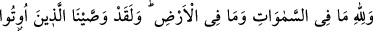
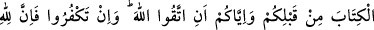
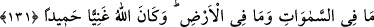
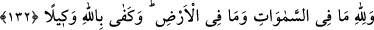
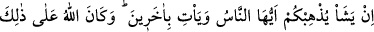
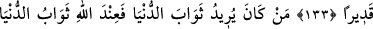
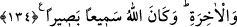

GÖKLERDE VE YERDE
OLANLARIN HEPSİ
ALLÂH’INDIR
131- Göklerde ve yerde olanların hepsi Allah’ındır. Sizden önce kendilerine kitap
verilenlere ve size «Allah’tan korkun» diye emrettik. Eğer inkâr ederseniz biliniz
ki göklerde ve yerde olanların hepsi Allah’ındır. Allah hudutsuz zengindir,
ziyadesiyle övgüye lâyıktır.
132- Göklerde ve yerde olanlar Allah’ındır. Vekil olarak Allah yeter.
133- Ey insanlar! Allah dilerse sizi yok eder ve başkalarını getirir; Allah buna
kadirdir.
134- Kim dünyâ mükâfâtını isterse (bilsin ki) dünyânın da âhiretin de mükâfatı
Allah katındadır. Allah her şeyi işiten ve her şeyi görendir.
“Göklerde ve yerde olanların hepsi Allah’ındır.” Yâni, gökte ve yerde ne kadar
mahlûkat varsa, onların rızıkları ve diğer ihtiyaçları Allah’a âittir.
Necmeddin-i Kübrâ (k.s.) şöyle demiştir: “Göklerde” olan yüksek dereceler, Me’vâ
cennetleri ve Firdevs-i a’lâ “ve yerde olanlar” yâni dünyâ nîmetleri, ziynetleri ve
süsleri demektir. Allah bunlardan müstağnîdir. Bunları, “Göklerde ve yerde olanları
sizin emrinize âmâde kıldı.” (Câsiye, 45/13) âyetinde buyurulduğu gibi sâlih kulları
için yaratmıştır. Kulları da “Ben seni kendim için seçtim” (Tâhâ, 20/41) âyetinde
buyurulduğu gibi kendisi için yaratmıştır.
“Sizden önce kendilerine kitap verilenlere” yâni yahûdî, hristiyan ve onlardan
önceki din mensuplarına kendi kitaplarında, “ve size” ey Muhammed ümmeti,
kitâbınızda “Allah’tan korkun” diye emrettik. Yâni, biz onlara emrettiğimiz gibi size de
“takvâya sarılın” diye emrettik. Âyetteki “kitâb”, bütün semavî kitapları şâmildir.
“Onlara ve size dedik ki: “Eğer inkar ederseniz, biliniz ki göklerde ve yerde olanların